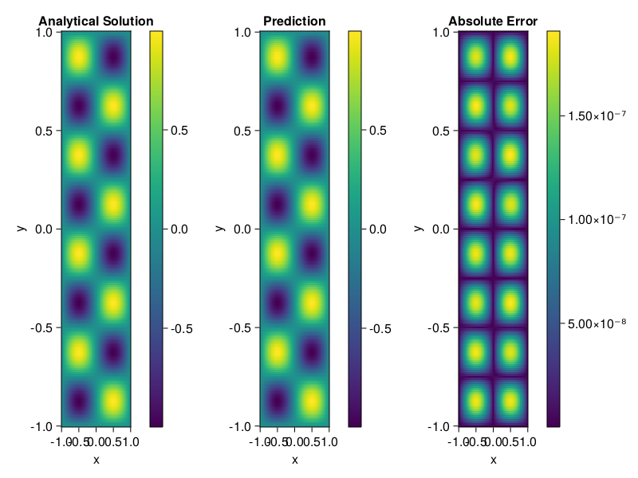

Helmholtz equation
Let us consider the Helmholtz equation in two space dimensions
\[\begin{aligned} &\Delta u(x, y)+k^{2} u(x, y)=q(x, y), \quad(x, y) \in \Omega:=(-1,1)^2 \\ &u(x, y)=0, \quad(x, y) \in \partial \Omega \end{aligned}\]
where
\[q(x, y)=-\left(a_{1} \pi\right)^{2} \sin \left(a_{1} \pi x\right) \sin \left(a_{2} \pi y\right)-\left(a_{2} \pi\right)^{2} \sin \left(a_{1} \pi x\right) \sin \left(a_{2} \pi y\right)+k^{2} \sin \left(a_{1} \pi x\right) \sin \left(a_{2} \pi y\right).\]
The excat solution is $u(x,y)=\sin{a_1\pi x}\sin{a_2\pi y}$. We chose $k=1, a_1 = 1$ and $a_2 = 4$.
using ModelingToolkit, IntervalSets, Sophon, Lux
using Optimization, OptimizationOptimJL
@parameters x,y
@variables u(..)
Dxx = Differential(x)^2
Dyy = Differential(y)^2
a1 = 1
a2 = 4
k = 1
q(x,y) = -(a1*π)^2 * sin(a1*π*x) * sin(a2*π*y) - (a2*π)^2 * sin(a1*π*x) * sin(a2*π*y) + k^2 * sin(a1*π*x) * sin(a2*π*y)
eq = Dxx(u(x,y)) + Dyy(u(x,y)) + k^2 * u(x,y) ~ q(x,y)
domains = [x ∈ Interval(-1,1), y ∈ Interval(-1,1)]
bcs = [u(-1,y) ~ 0, u(1,y) ~ 0, u(x, -1) ~ 0, u(x, 1) ~ 0]
@named helmholtz = PDESystem(eq, bcs, domains, [x,y], [u(x,y)])\[ \begin{align} \frac{\mathrm{d}^{2}}{\mathrm{d}x^{2}} u\left( x, y \right) + \frac{\mathrm{d}^{2}}{\mathrm{d}y^{2}} u\left( x, y \right) + u\left( x, y \right) =& - 166.7832748185191 \sin\left( 3.141592653589793 x \right) \sin\left( 12.566370614359172 y \right) \end{align} \]
Note that the boundary conditions are compatible with periocity, which allows us to apply BACON.
chain = BACON(2, 1, 5, 2; hidden_dims = 32, num_layers=5)
pinn = PINN(chain) # call `gpu` on it if you want to use gpu
sampler = QuasiRandomSampler(300, 100)
strategy = NonAdaptiveTraining()
prob = Sophon.discretize(helmholtz, pinn, sampler, strategy)
@time res = Optimization.solve(prob, BFGS(); maxiters=1000)u: ComponentVector{Float64}(filters = (filter_1 = (bias = [0.13728898893114216; -0.2312134717623364; … ; 1.072682319007718; 0.51189466445397;;]), filter_2 = (bias = [-0.056938271530095834; -0.6739374539728759; … ; 0.4639238919014063; -0.9701562826769224;;]), filter_3 = (bias = [0.060838965467901955; -0.6053926860996169; … ; 0.3975169989709596; -0.11166830577987992;;]), filter_4 = (bias = [-0.1648787119192431; 0.49820493807800836; … ; -0.2818411622315409; -0.1269613170623446;;]), filter_5 = (bias = [-0.8532118220846836; -0.6142638298164452; … ; 0.2211585835004334; -0.5649193099917282;;])), linear_layers = (layer_1 = (weight = [0.22298251558773635 -0.1913171149234943 … -0.05996951280345488 -0.29371277981957344; 0.038451070899567646 0.37899425273706094 … 0.08310821486573089 0.3248810712742279; … ; 0.19669330579688854 0.21580694452852522 … -0.057323788820524156 -0.04183932702660471; 0.05782140479763565 -0.10002056251995906 … -0.2046671844226791 -0.2246593867739135], bias = [0.008424102340304258; 0.037087025528834604; … ; 0.028226682085982027; 0.0020291387039703766;;]), layer_2 = (weight = [-0.1283333968697591 0.046294540820367554 … 0.15321675193773754 0.19646438973910554; -0.253985559538859 0.10912181169851759 … -0.06474252429773894 0.2683266285174083; … ; 0.12257049320857785 0.06385141841234336 … -0.39500188500307837 0.28923601927912646; 0.3668148991421412 -0.2570062697668443 … -0.29839921841724404 0.2212697052267039], bias = [0.00021486315050892515; 0.009945176428472941; … ; -0.008448843632304928; 0.0006122465734703143;;]), layer_3 = (weight = [-0.05191930688709549 0.10990440705389228 … -0.3409646242446477 0.35985171090679624; -0.24519953581240786 -0.19204302519490574 … -0.25856451365811567 0.04262244886487364; … ; 0.13262821603242514 -0.4023496265269501 … 0.25795165476856813 0.23346533156414434; -0.19035985349378393 0.14341269176670587 … -0.1390263331222493 -0.030746525698268003], bias = [-0.009939144967912438; 0.014901356751035707; … ; -0.007846701809959118; 0.00042999608653915673;;]), layer_4 = (weight = [-0.24003538706955552 0.33266771296964476 … -0.25400800123765715 -0.34438571497328335; 0.028013672829791166 0.35647129734579575 … -0.32418590815627507 -0.30367202123941567; … ; 0.05718680309583254 0.05014652257898691 … -0.07683763561417911 0.42062107610446015; -0.3216006694941112 -0.3917497856660825 … -0.40487867884498463 -0.06657850842503214], bias = [0.0021656995523563058; 0.0037284131196603657; … ; -0.004414394368454469; -0.001110591759502452;;])), output_layer = (weight = [0.0038529406619596434 -0.22395180934424735 … -0.1263073944011684 0.31663741797633727], bias = [0.017397320911044768;;]))Let's plot the result.
phi = pinn.phi
xs, ys= [infimum(d.domain):0.01:supremum(d.domain) for d in domains]
u_analytic(x,y) = sinpi(a1*x)*sinpi(a2*y)
u_real = [u_analytic(x,y) for x in xs, y in ys]
phi_cpu = cpu(phi) # in case you are using GPU
ps_cpu = cpu(res.u)
u_pred = [sum(phi_cpu(([x,y]), ps_cpu)) for x in xs, y in ys]
using CairoMakie
axis = (xlabel="x", ylabel="y", title="Analytical Solution")
fig, ax1, hm1 = heatmap(xs, ys, u_real, axis=axis)
Colorbar(fig[:, end+1], hm1)
ax2, hm2= heatmap(fig[1, end+1], xs, ys, u_pred, axis= merge(axis, (;title = "Prediction")))
Colorbar(fig[:, end+1], hm2)
ax3, hm3 = heatmap(fig[1, end+1], xs, ys, abs.(u_pred-u_real), axis= merge(axis, (;title = "Absolute Error")))
Colorbar(fig[:, end+1], hm3)
fig